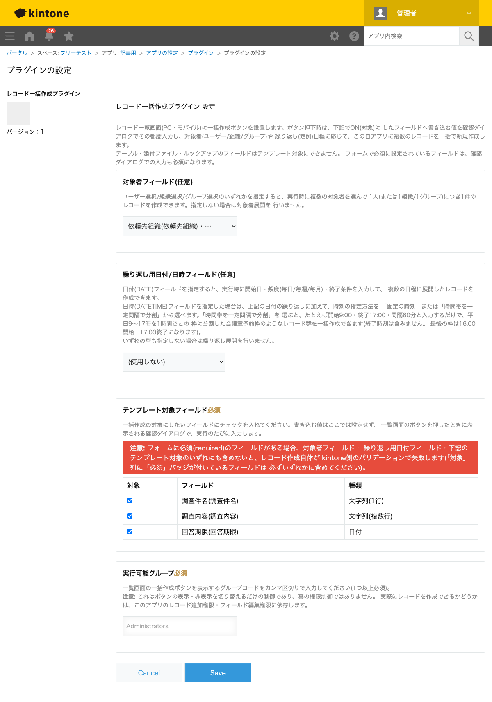
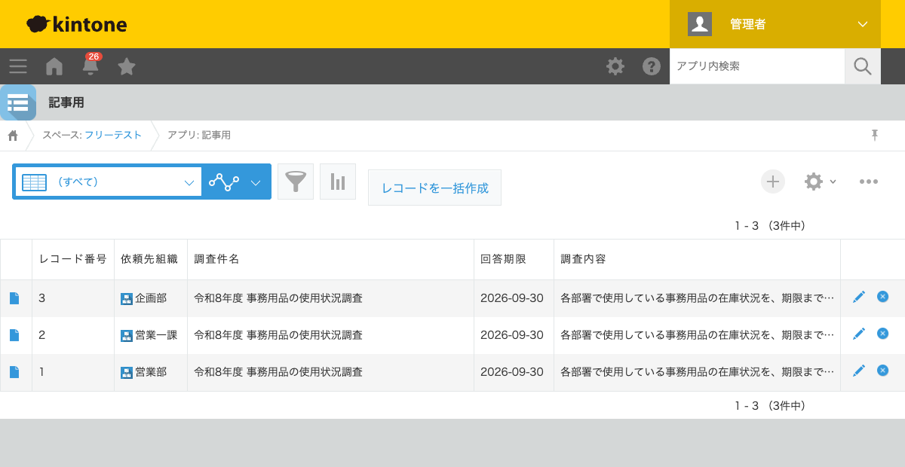

GovAppsプラグイン 安全性を確認できる無料kintoneプラグイン集
総務課・企画課のような1つの部署から、社内(庁内)のすべての組織に対して同じ内容の調査・照会を 一斉に依頼したい場面があります。「事務用品の使用状況を教えてください」「予算要望を提出してください」 といった庁内照会が典型例です。この記事では、部署の数だけ手作業でレコードを複製することなく、 無料プラグインで一括作成する方法を、実際の設定画面と作成結果つきで解説します。
kintoneの標準機能には「複製」ボタンがありますが、これは1レコードずつの複製です。組織が
数十あれば、依頼先組織の欄だけを変えながら数十回複製・編集する作業が発生します。組織選択
フィールド自体は標準機能で用意できますが、「選んだ組織の数だけレコードを自動的に増やす」機能は
標準にはありません。JavaScriptカスタマイズを自作すれば実現できますが、組織階層の取得
(/v1/organizations.json等のUser API)や重複除去、実行時の入力ダイアログまで
自前で書くことになり、簡単な作業ではありません。
「組織の数だけレコードを増やす」機能を用意する方法は、大きく4つあります。それぞれの 向き不向きをまとめました。
| 方法 | 向いている場合 | 注意点 |
|---|---|---|
| kintone標準機能のみ | 組織が数件程度で、手作業の複製でも十分な場合 | 組織数が増えるほど手作業のコピー&ペーストが負担になる |
| JavaScriptを自作する | 社内に開発者がいて、独自要件が多い場合 | User APIの実装・保守が必要。担当者の異動時に引き継ぎコストがかかる |
| 有料の他社プラグイン | 予算があり、手厚いサポートを求める場合 | 月額課金が発生する。ソースコードが非公開で、外部通信の有無を利用者側で確認しにくいことが多い |
| GovAppsプラグイン(このプラグイン) | 無料で試したい、社内・庁内でセキュリティを確認してから導入したい場合 | 機能追加の要望はGitHub Issueベース(個別カスタマイズの請負は行っていない) |
GovAppsのプラグインはすべて無料・広告なしで、追加課金なしで使い続けられます。 ソースコードはGitHubで全公開しているオープンソースなので、 「本当に外部と通信していないか」「入力値をどう扱っているか」を自治体・企業のセキュリティ担当者 自身の目で確認できます(このプラグインも個別ページにセキュリティレビュー結果を掲載しています)。 無料プラグイン配布サイトの中でも、ここまで確認可能性を重視しているのはGovAppsの特徴です。
レコード一括作成プラグインには、対象者フィールドに 「組織選択」フィールドを指定すると、実行時に組織を複数選択して「1組織=1レコード」で一括作成する 機能があります(ユーザー選択・グループ選択でも同様に使えます)。設定はこの3ステップです。

レコード一覧画面の「レコードを一括作成」ボタンを押すと、調査件名・回答期限・調査内容を入力する ダイアログと、対象の組織を選ぶ画面が表示されます。今回はサンプル環境にある3つの組織(営業部・ 営業一課・企画部)をすべて選択して実行しました。内容を確認する最終ダイアログで「作成」を押すと、 組織ごとに1件、同じ内容のレコードが一括で作成されます。

組織を1つ追加・変更したい場合も、次回実行時にダイアログで選び直すだけです。テンプレートの 内容(調査件名や期限)を都度変えられるので、毎回違う照会内容にも対応できます。